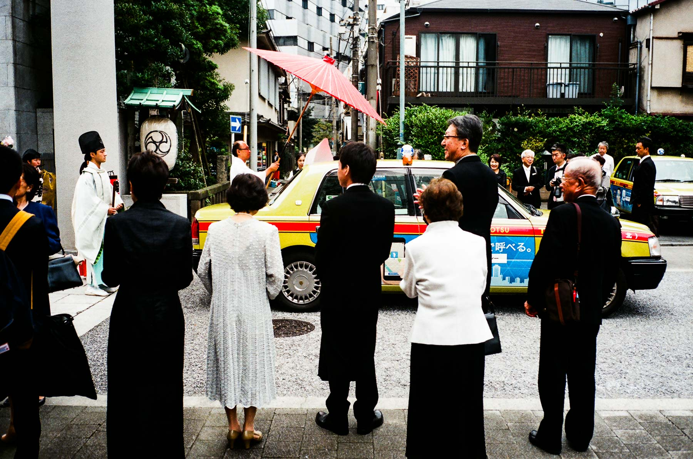

2016年10月，我去了日本東海道十三日。這次旅行的觸發點是築地市場，2016年初時聽說築地市場會在同年11月搬遷。雖然自稱很喜歡日本文化和飲食，可是我還未去過築地市場。心想不行，我一定要去一去這個世界知名的市場朝聖。誰知道旅程約一年後的今日，因為豐州新址土地污染等問題，令計劃一直拖延，築地市場仍然屹立。現在的情況是築地市場確定搬至豐洲，但似乎還沒有確定的時間表，而築地原址則可能會配合2020年奧運，重建成為美食公園。不過最近安倍解散眾議院，天知道築地豐洲計劃會何年何月落實。
我發現自己打遊記很容易遍離主題，要提醒自己回到正題啊！
羽田機場至銀座
這次旅程乘坐hkexpress的下午機，預計9月30日晚十一點半到達羽田機場。在出發前已經找好羽田出市區的交通，不過到埗後發現過關和拿行李比想像中慢，出到大堂已經十二點多，本身預備好乘坐的京急線電車都已經打烊了。臨時才去找深夜巴士，發現一個香港大學生好像很迷茫，原來他要和朋友渋谷會合，可是未能趕及乘搭電車。協助他買好了巴士票後，我也很快買到去東銀座的巴士票，比電車貴幾倍，一來到東京就失預算，只怪自己計劃不夠周詳。
到埗後的第一晚便計劃凌晨兩點幾三點去到築地市場，所以這晚沒有預訂酒店，也沒有預備睡覺。一點多到達銀座後，便在附近亂逛，竟然下起毛毛細雨。星期五晚半夜的銀座非常靜，街上只有零星上班族，大多都是和同事朋友享受完Happy Friday後，在街頭截的士回家。一點多兩點，大部份銀座的店舖已經關門，我往新橋方向行走，在高速公路橋底看見一間ドン・キホーテ（唐吉珂德/激安之殿堂），門口坐著一個可能是無家的老人，白髮蒼蒼。
背著十三天的行李，在凌晨的ドン・キホーテ逛街，跟我上次去東京的經驗很不一樣，而我很喜歡這樣的感覺。可是實際上，在這種情況下根本沒有購買慾，而且飛機餐的餘韻仍然停留在胃內，所以最後只買了一支茶解渴。離開後我便向築地市場的方向走，途中經過便利店，也只是入去享受空調，呼吸一下東京這座城市靜態的一面。望一望鐘，凌晨兩點多，看來是時候去築地市場了。
築地市場
其實之前我對築地市場的印象是這樣的：「一幢很大的建築物，裏面有是售賣/批發魚類的。」直至出發前我才認真研究，原來它分場外、場內市場，並分有不同的範圍，但始終之前沒有去過，仍然未能想像市場的具體情況是怎樣。剛好在出發前香港戲院有一部築地市場的紀錄片上畫，片內將築地市場的多面呈現在我眼前：原來這個地方跟我一直想像中有很大分別。
所謂場外市場只是附近一系列街道的食店，主要是賣壽司、魚生，也有其他不同食材的店舖；而場內市場比我想像中大太多了，其中最有吸引力和印象最深刻的是上午十點後讓公眾參觀的「水產仲卸業者市場」，「仲卸業者」大概是中間批發商的意思，他們每天接到訂單，便會在築地市場內拍賣競投水產，在處理、分等級過後將水產售賣予訂購水產的食店，其中包括東京市內頂級的壽司店。
去到築地市場的其中一個入口「勝どき門」，在這個時候出現的人都是想去看吞拿魚拍賣的，門口的保安也指路給遊客，我便跟著入了等待的房間裏。看吞拿魚拍賣每天只有120個名額，事前上網看別人建議最好兩點幾三點到達，起初覺得是誇張，但好彩我兩點幾去到，因為當時已經超過九十人在排隊，到三點左右已經滿額！來看拍賣的主要是外國人，當中也有幾個日本人在等，可是吞拿拍賣五點幾天光後才開始，這兩個多小時坐在地上，又不可以寄存行李，真係有啲難捱。
辛苦等到四點幾，等候區出現了一位在市場內工作的中間批發商コウセイさん，他用英文介紹築地市場、拍賣的情況、各種魚類的分別，等候的遊客更可以發問問題，等候區的氣氛突然精神起來！這位「導遊」的英文在日本人之中已經算非常流利，可是口音仍然不輕，在凌晨混沌的精神狀態，要花極大氣力先聽得明。現在我只記得他說在北海道海域的「本鮪」（藍鰭吞拿）是世界第一的吞拿魚，可是人家快絕種啦！
コウセイさん介紹完畢後，也差不多夠鐘睇拍賣了，時間已經差不多六點，行出等候區一股寒意直穿骨裏，再加上毛毛細雨，跟等候區很大差別。從等候區行去拍賣場不遠，大家為了影相都企個靚位，我只可以從後排攻擊。
拍賣的情況其實紀錄片裏拍得非常清楚，整個過程毫不緊張。批發商們會在正式拍賣前檢視每一條派在地上的吞拿魚，每條魚尾都是切掉放在魚身上，方便批發商檢視品質，有時他們會刮起少少魚肉，放在手指間手揉搓，甚至放在口裏試味。正式拍賣時他們以快如閃電的手勢叫價，在見學的短短二十分鐘時間，已經賣掉大量的吞拿魚。
看完拍賣之後，便回到場外市場，跟中學同學約好見面（他剛巧同一時間在東京旅行），之後便在場內外逛了好一會兒，也行過築地售賣蔬果的市場。因為場內知名的店舖都排滿晒人，所以我們最後去了場內市場的一間咖啡店飲咖啡，整晚沒有睡覺，需要充一充電了。
逛了個多小時後，我們到了場外市場其中一家無乜人的壽司店，無乜人食但沒有中伏，吃了幾件壽司後，便跟同學和築地市場說再見，去下一個目的地。
芝大神宮
除了去築地市場之外，神社廟宇是這次旅行的另一項主要行程。在築地市場乘搭都營地下鐵大江戸線，第二站便是大門站。從大門站行去芝大神宮不需五分鐘，來到芝大神宮剛好碰著有一對新人舉行結婚式。這應該是第一次親眼看到日本傳統的結婚式以及新娘穿著的「白無垢」和服。

上樓梯去到芝大神宮，比想像中細小，不過這座神社的歷史超過一千年，相傳德川家康在出征關原之戰之前，曾到此神社祈福；大阪之戰出征時，德川秀忠的正室崇源院也有來祈福。自此之後，這裏受到德川家代代將軍和大名供奉。芝大神宮經歷過數次搬遷和摧毀，現在屹立的是二戰後重建的。這裏供奉的是伊勢神宮的祭神：天照皇大御神和豊受大御神，另外亦有供奉源賴朝和德川家康。
增上寺
離開芝大神宮，便到附近的增上寺，後面竟然出現了東京鐵塔，此時才發現我對東京的地理地區還是不太熟悉呢！
增上寺是日本佛教淨土宗的寺廟，其前身光明寺可以追塑到公元9世紀。去到1393年正式創建為增上寺，與松平、德川家有很親密的關係，更成為德川家的菩提寺（即是世世代代死後埋葬、供奉的寺廟）。在寺內的德川家靈廟，葬了六代的德川家將軍。
在增上寺買過御守後，便去下一個景點進發。
東京都写真美術館
坐JR去到恵比寿，向目黑方向行大約十分鐘，便到東京写真美術館。美術館有20年歷史，剛剛過去的9月初完成內部翻新，館內分三層，有一半是免費參觀的，特別展覽則要付入場費。

這次來的目的是看慶祝開館二十年，世界知名的日本攝影師杉本博司的 Lost Human Genetic Archive 展覽。展覽主要是裝置和攝影作品，同場亦有杉本的〈廢墟劇場〉攝影系列。
看完展覽，在館內的店買了幾張postcard、杉本展覽的目錄和幾本關於新閒攝影的書籍。超過三十個小時沒有睡覺，腳步開始變得輕飄飄，是時候去池袋的東橫INN check-in休息了。
晚餐購物
來到晚飯時間，又找回那位中學同學一起去吃晚餐，我們去了很出名的無敵家，排隊排了大半小時終於可以進食。味道比八年前吃的差不多，在這裏吃拉麵當然要替玉啦！
吃完晚餐後，我們去了BOOK OFF尋寶，BOOK OFF是售賣二手書、CD的連鎖店，埋頭書堆之中找心頭好，感覺非常良好。買了一堆二手小說和CD，還加入了會員，不過唔知下次幾時有機會去了。
購物完畢後，再次和同學說再見，然後便回酒店昏睡了。